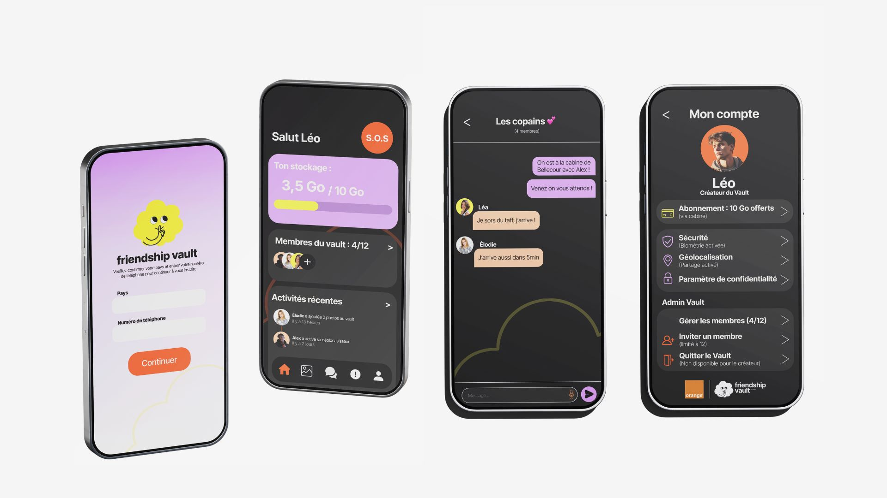
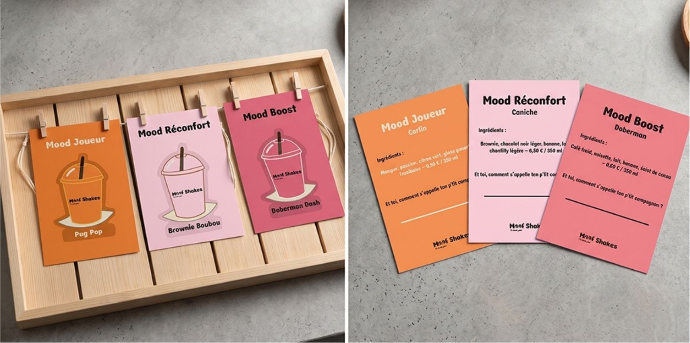
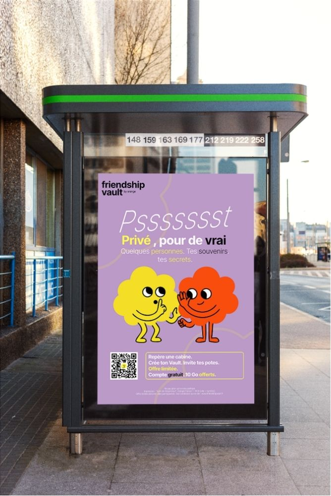
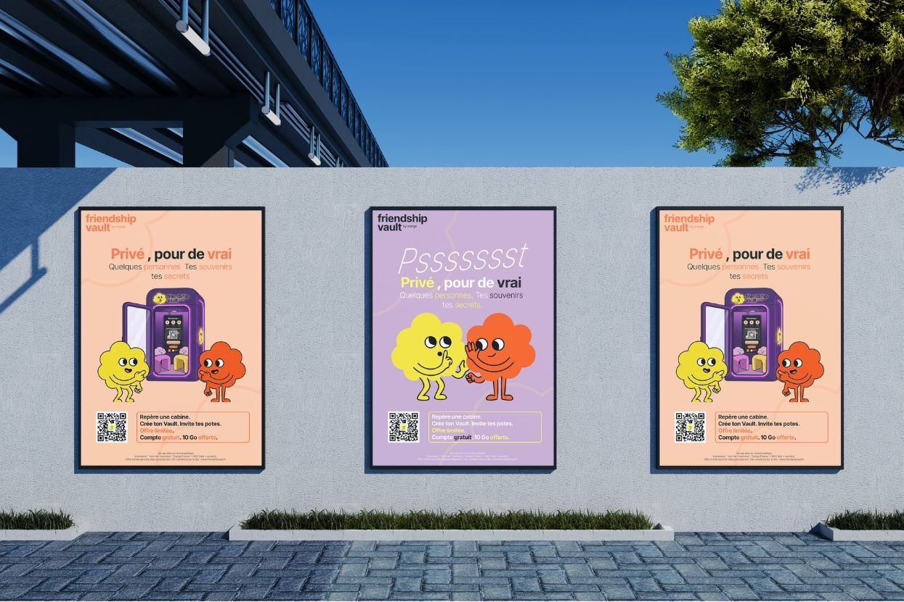

01. Recherche & Personas
Définition des profils utilisateurs types, analyse de la concurrence et benchmarks graphiques.
Sous-titre accrocheur décrivant la proposition de valeur principale du projet.
Explication détaillée du contexte de départ, des attentes du client ou de la commande académique, et des objectifs visés.
Mise en avant des contraintes techniques, de l'identité de marque recherchée et des cibles visées.
"Comment structurer l'information de manière intuitive tout en proposant une identité visuelle forte et différenciante ?"
De l'esquisse papier aux premiers zonages fonctionnels sous Figma.

Définition des profils utilisateurs types, analyse de la concurrence et benchmarks graphiques.

Itérations sur l'architecture des pages et validation des parcours clés avant la phase UI.
Découverte des écrans finaux, du design system et des choix graphiques.

Adaptation fluide des composants pour les formats mobiles et tablettes.

Normalisation des boutons, typographies, états de survol et icônes.
Ce projet m'a permis de perfectionner ma méthodologie de conception, de la phase de cadrage stratégique jusqu'à la production des livrables finaux.